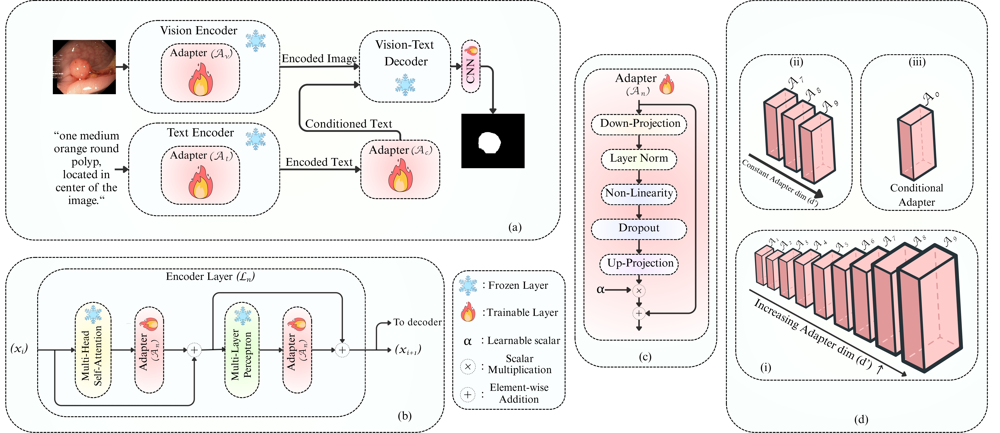

1Centre for Artificial Intelligence and Robotics, Indian Institute of Technology Mandi, India
The core insight is a depth-aware telescopic scaling strategy: rather than applying uniform adapter widths, we assign smaller bottleneck dimensions to early layers and progressively increase capacity toward deeper layers.

@InProceedings{Mishra_2026_WACV, author = {Mishra, Ujjwal and Shukla, Vinita and Hambarde, Praful and Shukla, Amit}, title = {Improvise, Adapt, Overcome -- Telescopic Adapters for Efficient Fine-tuning of Vision Language Models in Medical Imaging}, booktitle = {Proceedings of the IEEE/CVF Winter Conference on Applications of Computer Vision (WACV)}, month = {March}, year = {2026}, pages = {7605--7615} }